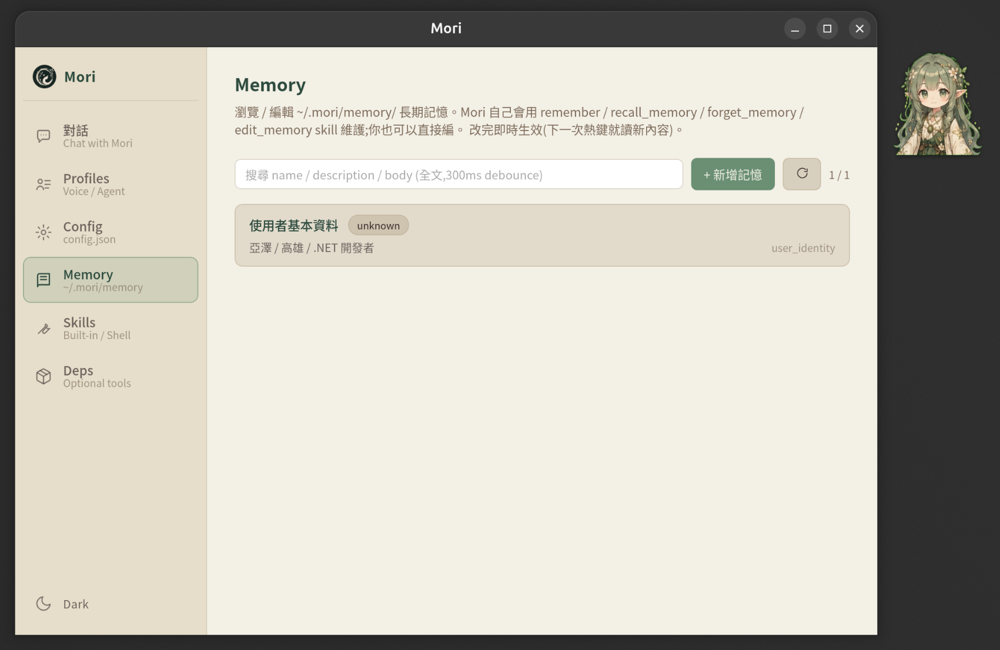
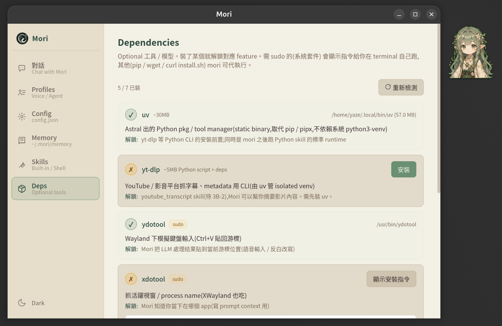

Mori
DOCS
Mori 把所有 user-state(config / profile / memory / theme)都存在
~/.mori/ plain text 檔。第一次啟動會自動建必要骨架,user 可隨時手改,
改完不需要重啟 — 下一次熱鍵會即時讀新內容。
尚未發布 release binary / package。安裝就是 clone + build:
git clone https://github.com/yazelin/mori-desktop.git
cd mori-desktop
cargo build --workspace
npm install
npm run tauri dev詳細步驟見 Getting Started。 Release binary(.deb / AppImage / .dmg)在 roadmap。
說明:
[auto] = 啟動時自動建立 ·
[lazy] = 用到才建 ·
[opt] = 選用,user 自己建/裝

provider / stt_provider / api_keys /
routing / voice_input。第一次跑 bootstrap stub(main.rs::ensure_config),
從 Config tab 編或直接改 JSON。完整欄位見
Providers。
dark / light /
自訂)。Sidebar 左下角 toggle 或 Config tab 切 theme 時更新。
#file: ../corrections.md 引用,LLM 看 system prompt 時讀進去。
user 自己建,不存在不影響運作。
theme.rs::ensure_builtin)。
啟動時若不存在從 bundle 寫入,**存在就不覆蓋**(user 編輯保留)。
color key 對應 CSS variable(page-bg → --c-page-bg 等)。
dark.json 改名 + 改色即可,
Config tab → Theme 自動列出。完整 key 對照見
Brand Design Book → Dual Theme System。

agent_profile.rs::ensure_agent_dir_initialized)。
啟動時若 agent/ 空就寫一份 DEFAULT_AGENT_MD。
user 沒指定 profile(沒按 Ctrl+Alt+N)時 fallback 到這個。
Ctrl+Alt+N(N=0~9)切換,或
Ctrl+Alt+P picker / Profiles tab / tray menu。
Frontmatter 包含 provider / enabled_skills /
shell_skills 等,body 是人格 / 行為 prompt(可用 #file: 引用其他檔)。
voice_input_profile.rs::ensure_voice_input_dir_initialized)。
沒任何 USER-*.md 時 fallback 到 code 內常數
FALLBACK_PROFILE_MD(基本繁中校正),不寫 disk。
Alt+N(N=0~9)切換,
STT → 單輪 LLM cleanup → 貼游標。Frontmatter 可 override
stt_provider / cleanup_level / paste_shortcut。

RememberSkill 寫入 <name>.md。
跟 Claude Code auto-memory 同款結構(每筆獨立 .md + frontmatter type / description)。
Memory tab 可瀏覽 / 編輯 / 全文搜尋。第一次 remember 時 create_dir_all。


whisper-local STT 用的 GGML 模型(466MB 中文小模型)。
Deps tab 一鍵下載,或 wget 從
HuggingFace
抓。stt_provider: whisper-local 才需要。
mori-cli)跟主程式溝通用的本機 HTTP port + auth token。
啟動時自動寫,每次 dev restart 換新 port / token。
給 Bash CLI proxy(claude-bash / gemini-bash /
codex-bash)的 mori CLI 用。
所有 ~/.mori/ 內檔案都是 plain text user 可手改,但**主視窗 UI 多數情境更方便**:
config.json → Config tab(form + raw JSON view)agent/*.md / voice_input/*.md → Profiles tab
(typed form + shell_skills 表格 + raw)memory/*.md → Memory tab(列表 + 全文搜尋 + 編輯 modal)themes/*.json → Config tab → Theme(下拉 + reload)改檔即時生效 — 下一次熱鍵 / Mori 回應會讀新內容,不需要重啟。Theme 切換用 emit 廣播,所有視窗即時跟著切。